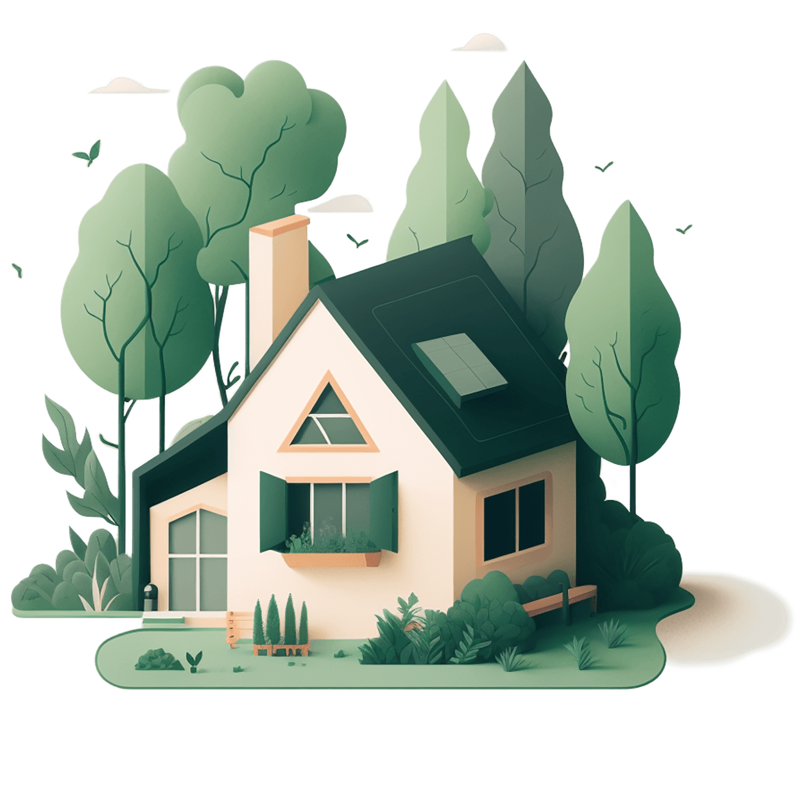

MMaak de overstap naar een duurzame toekomst, laat ons je helpen.
Bekijk wat verduurzamen voor jou kan betekenen. Wij helpen je met expertise, onafhankelijk advies en onze diensten.
Ons verhaal

Bekijk wat verduurzamen voor jou kan betekenen. Wij helpen je met expertise, onafhankelijk advies en onze diensten.
Ons verhaalOf je nu je droom wilt realiseren om de wereld een betere plek te maken of je wilt graag je energielasten verlagen, wij helpen je door bij het begin te beginnen. Je kunt je woning helemaal verduurzamen, of juist stap voor stap. Wij horen jouw wensen en ideeën in een kennismakingsgesprek en zullen aan de hand hiervan kijken naar een op maat gemaakt plan.
In een eerste gesprek bespreken we uw wensen gericht op verduurzaming van de woning en bekijken we het huidig verbruik van gas, elektra en water.
Hierna gaan we aan de slag met het schrijven van een maatplan gemaakt voor uw woning. Het plan wat geschreven wordt bestaat uit meerdere opties.
Hierna is het aan u de keuze of en hoe u de verduurzaming wilt inrichten. Dit kan op meerdere manieren, wat voor u passend is.
Zij kozen voor
gasloos.
“Ik kan er kort en bondig over zijn, Didier heeft prima werk geleverd. Alles is volgens afspraak en offerte uitgevoerd. Hiernaast heeft Didier veel kennis van zaken.”
“Ik kan er kort en bondig over zijn, Didier heeft prima werk geleverd. Alles is volgens afspraak en offerte uitgevoerd. Hiernaast heeft Didier veel kennis van zaken.”
“Ik kan er kort en bondig over zijn, Didier heeft prima werk geleverd. Alles is volgens afspraak en offerte uitgevoerd. Hiernaast heeft Didier veel kennis van zaken.”
“Ik kan er kort en bondig over zijn, Didier heeft prima werk geleverd. Alles is volgens afspraak en offerte uitgevoerd. Hiernaast heeft Didier veel kennis van zaken.”